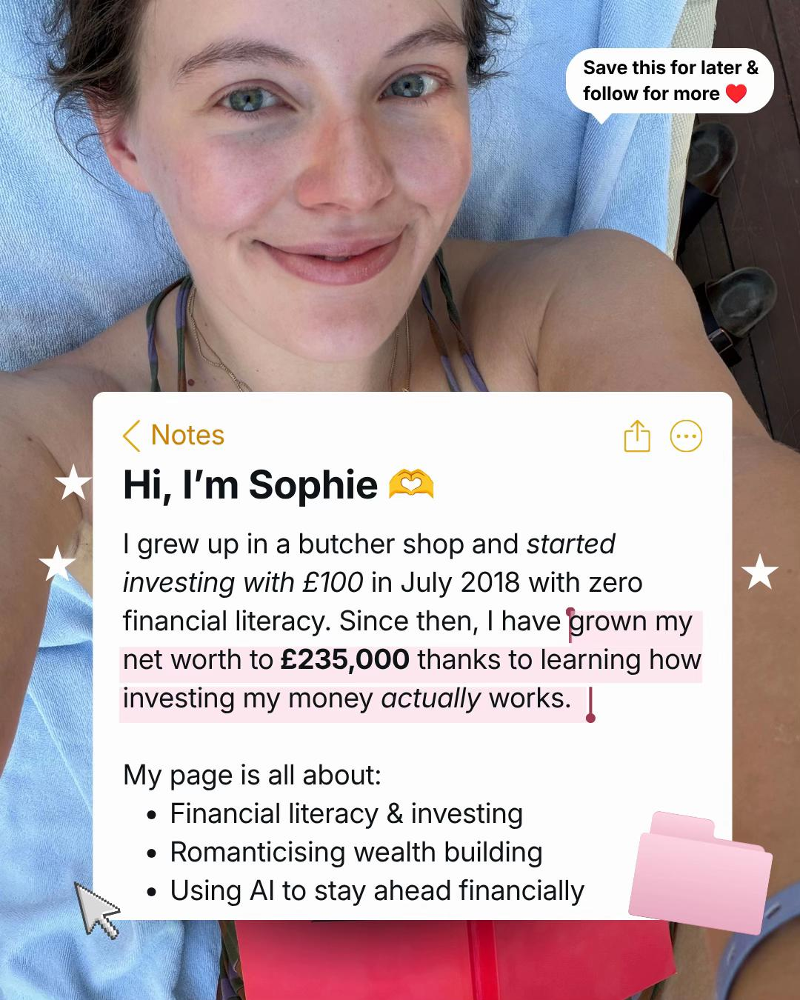
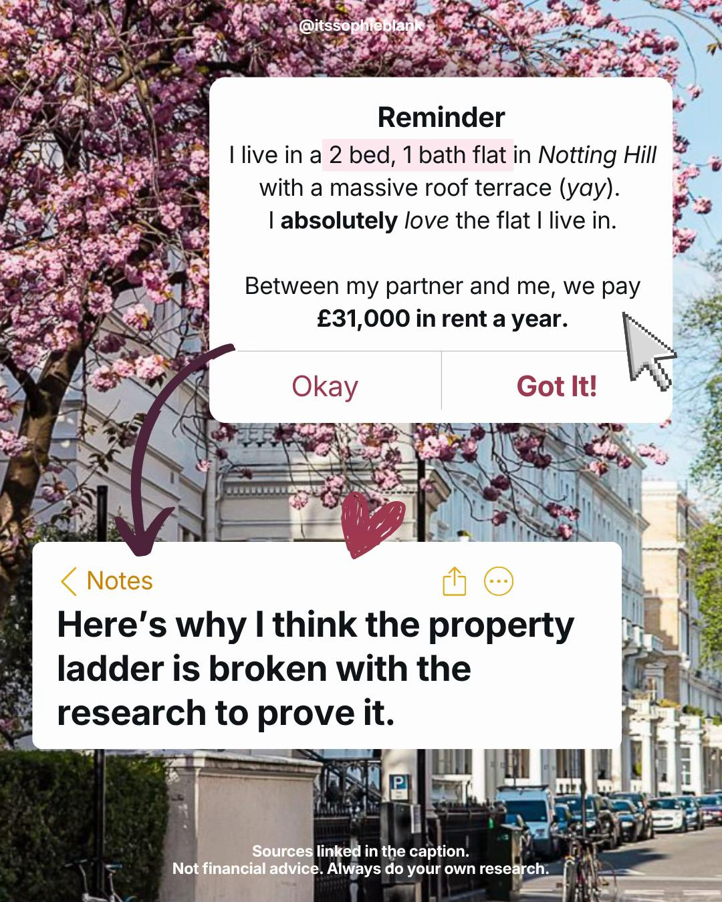
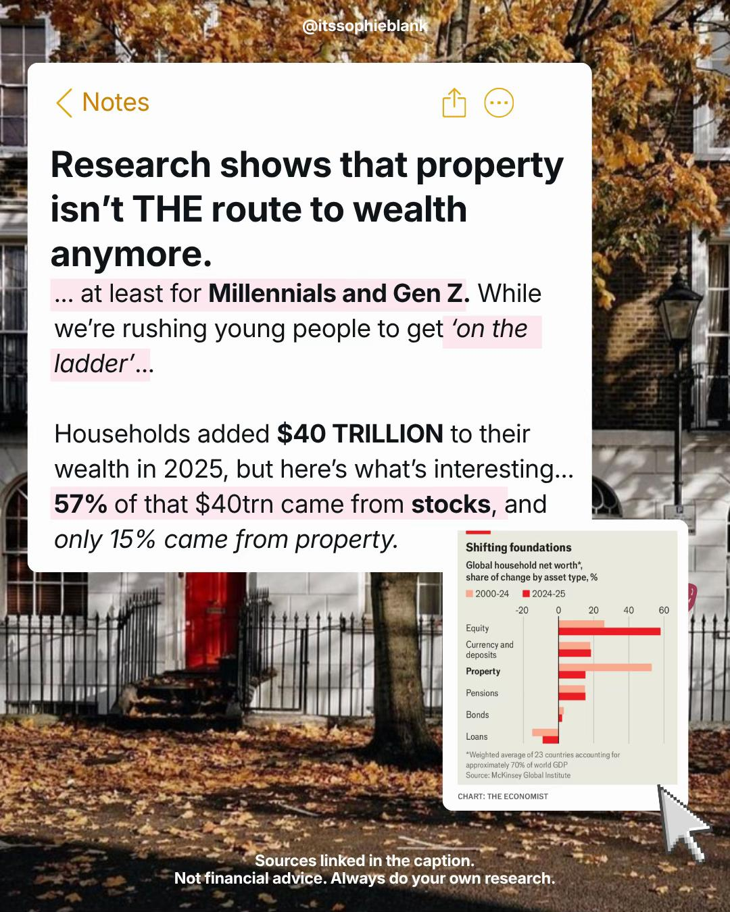
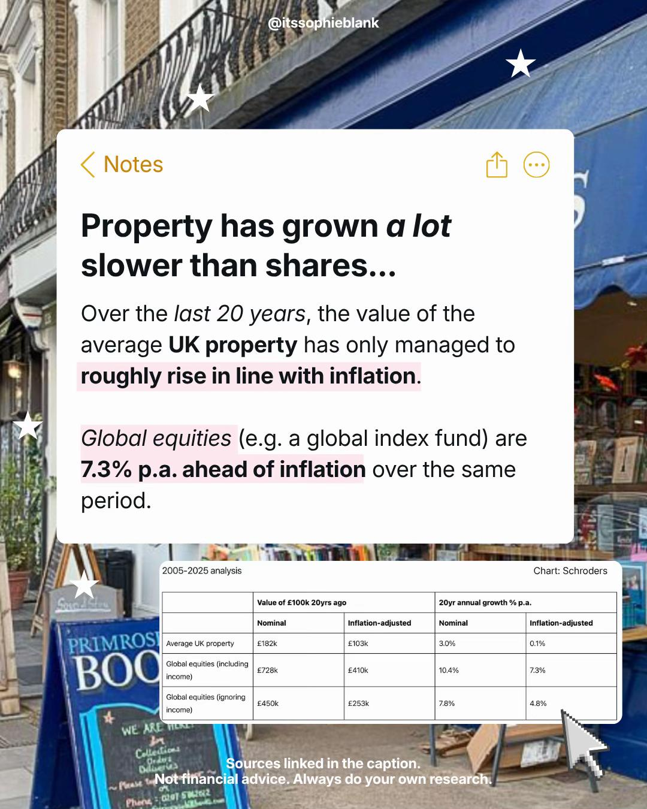
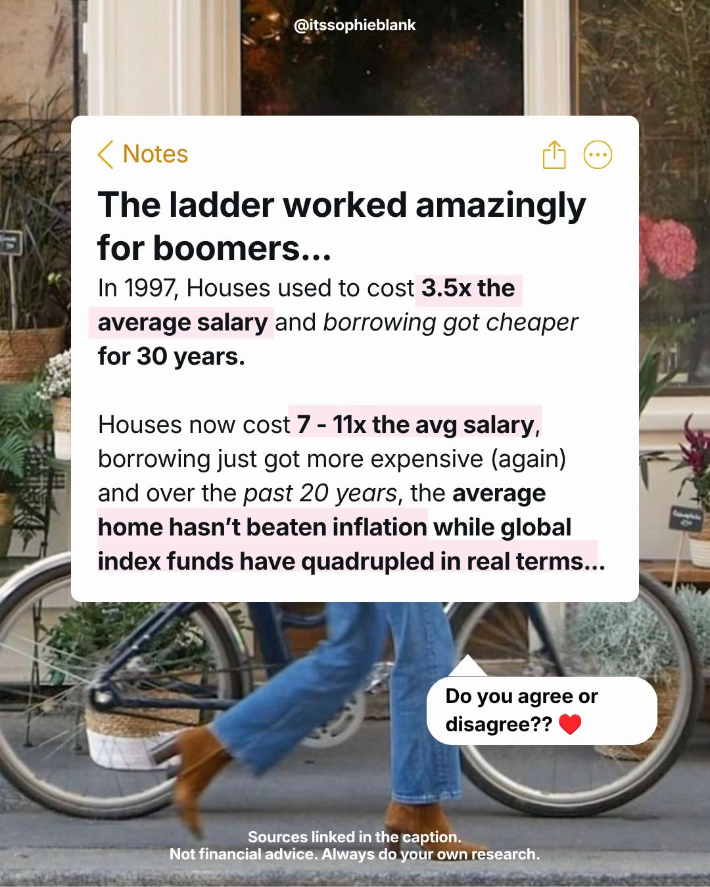
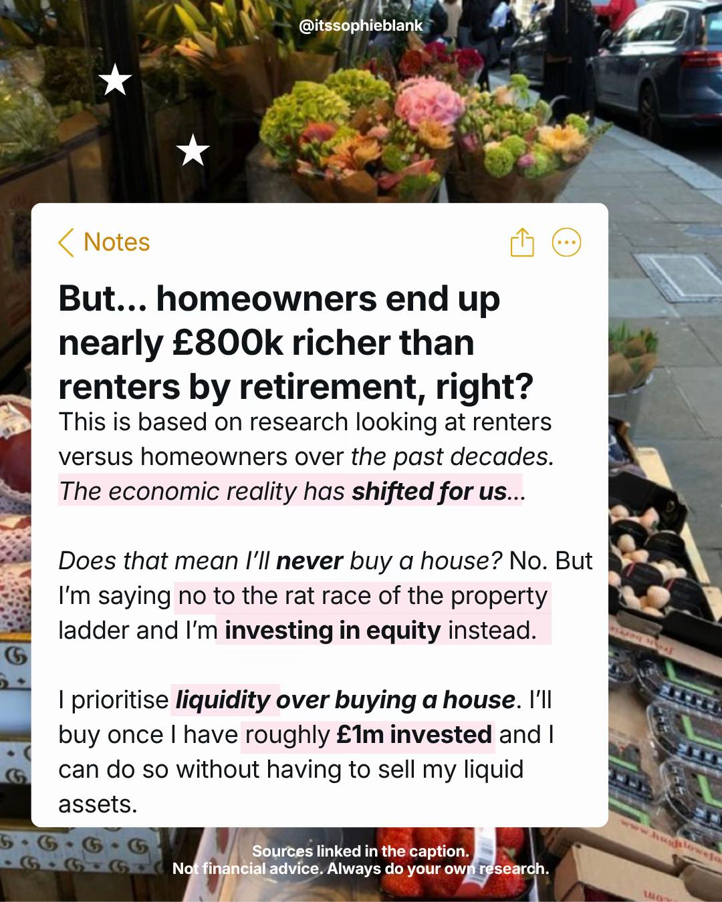

£31,000 a year in rent, £235,000 of net worth, and no plans to buy.
Back to Blog Renting Investing UK
The flat is a two bedroom in Notting Hill, West London, Zone 1, the kind of postcode that estate agents describe in reverent tones. The rent comes to roughly two and a half thousand pounds every month, a figure that would make most tenants wince and most landlords smile. Sophie Blank loves the flat, happily pays the rent, and has no intention of buying anything. She earns six figures, holds more than £220,000 in investments, and calls herself a happy renter without a flicker of apology.
Sophie Blank
I pay £31,000 in rent a year and I refuse to buy a property even though I earn six figures. I have more than £220,000 invested. I will not be buying a property anytime soon, and here's why.
Watch on TikTok (the happy renter video, 7,620 views).
That first video, watched 7,620 times, laid out her arithmetic in plain terms. Property in London has lost value over the past five years, in some areas by more than a fifth, while her own investments rose by 10 to 15 percent a year on average. A comparable flat to buy would cost £800,000 or £900,000, which she calls silly money. Her goal is to become a millionaire by forty, and she does not believe bricks will get her there.

She then turned the argument into a two part photo carousel. Part 1 drew 42,837 views with 698 likes. Part 2, the data heavy sequel, was watched nearly 68,000 times with around 3,000 likes, her biggest renting audience yet. The sequel walks through the rent figure, the research papers, and the generational maths behind her stance, ending where she always ends, with liquidity first and a purchase only once her invested wealth passes roughly £1 million.

All carousel images in this post are reproduced with credit to @itssophieblank. See the original video at watch on TikTok.
The ladder or the liquidity
The tension she names is the one hanging over every renter in Britain with savings. The property ladder promises safety, status, and a forced savings plan, but it demands an enormous deposit, years of illiquidity, and faith that prices will repeat the run of the eighties and nineties. Liquidity promises flexibility and compounding, but it demands the discipline to invest the difference every month instead of spending it, plus the nerve to keep renting while friends buy. Sophie chose liquidity, and she brought receipts.
The first receipt comes from the McKinsey Global Institute, whose 2026 research found that households added $40 trillion of wealth in 2025, with 57 percent of the gain coming from stocks and only 15 percent from property. The Economist drew the blunt conclusion in October 2026, calling shares the new bricks and mortar. For a generation told that a house is the only real asset, the numbers suggest the engine of wealth has moved.

The second receipt is a Schroders analysis of the twenty years from 2005 to 2025. A £100,000 sum placed in the average UK property grew to £182,000 in nominal terms, worth £103,000 in real terms, a real return of 0.1 percent a year. The same £100,000 in global equities grew to £728,000 nominally, £410,000 in real terms, compounding at 7.3 percent real a year. One path barely beat inflation. The other quadrupled purchasing power.

Mia Rose approaches the same ladder from the sceptical end, picking apart the schemes meant to hurry first-time buyers onto it. In a video watched 60,448 times, with 4,011 likes and 573 shares, she examined the government's Your First Home proposal, a 2.5 percent deposit plus a 20 percent equity loan on new builds, and urged her viewers to slow down.
Mia Rose
The proposal includes a 20% government backed equity loan. So if you included both figures on a 300 k home, you would put down 7,500 pounds, you would have a 60,000 pound equity loan. You then need a 232,500 pound mortgage.
Watch on TikTok (60,448 views, 4,011 likes, the Your First Home review).
Her warning is that a small deposit is a thin cushion. Prices can fall, new builds carry their own premium, and an equity loan has terms that only reveal themselves later. Buying sooner is not automatically better, she argues, and the headline rate should never decide a quarter million pound commitment.
"I think for some people it could be genuinely useful, but buying sooner isn't automatically better. In order to know whether this is a good choice, I think we need to wait until we see the loan terms, the monthly repayments and what happens if you need to sell before calling this an automatically good deal."Mia Rose (watch on TikTok)

The generational slide lands hardest. In 1997 the average house cost 3.5 times the average salary. Today the multiple runs from 7 to 11 times depending on the region, and ONS affordability data confirms the stretch. Yorkshire Building Society research puts the lifetime homeowner versus renter wealth gap near £800,000, a figure Sophie uses not as a reason to buy at any price but as proof of how punishing the current entry ticket has become. Buying then and buying now are different decisions wearing the same name.
"I love my flat. I happily pay two and a half grand every month in rent and invest my money instead."Sophie Blank (watch on TikTok)
If renting is the strategy, investing the difference is the engine, and Hannah Bevington shows what that engine looks like as a monthly routine. In a payday video watched 3,016 times, she described the four things she does every time she gets paid, and investing sits at the centre of the ritual.
Hannah Bevington
The fourth thing that I do, I invest. And I have been investing for five years now and genuinely it's the best thing I've ever done. I try and do it every month and it looks very different based on my lifestyle, what I have coming up, what I get paid.
Watch on TikTok (3,016 views, the payday routine).
Her amounts flex with life, sometimes £50 a month, sometimes thousands, but the habit never lapses. It is the renter's answer to the mortgage direct debit, an automatic claim on future wealth that does not require a conveyancer. Five years of that rhythm, she says, is the best financial decision she ever made.
"Sometimes it looks like £50 a month, a hundred other times it's look like two, three, 4,000. But whatever I can invest, I just ensure I keep and build that habit every single month."Hannah Bevington (watch on TikTok)
Sean makes the same case from the smallest possible starting point. For more than a year he put just £10 a week into a Trading212 portfolio, split across a global ETF, an S and P 500 fund, and a semiconductor fund, never missing a week. The experiment began as a demonstration that small sums count, and became something closer to an education.
Sean
I opened this portfolio on Trading212 over a year ago and I've been investing £10 into it every week since then. It's split across these three investments in the same proportion every week and I've never missed a week. The original idea of this video was to show you that you don't need lots of money to invest.
Watch on TikTok (the £10 a week experiment).
His point is aimed squarely at anyone waiting to start. Months of tiny deposits teach dollar cost averaging, exchange traded funds, and comfort with volatility while the stakes are trivial, so that larger sums later feel familiar rather than frightening. The habit compounds before the money does.
"I'm doing it with just 10 pounds a week. But I've realized that it's a really good illustration of the fact that it's important to build the habits of investing early to start understanding how the stock market works, understanding terms like dollar cost averaging, and what an exchange traded fund is, so that when you do have more money at your disposal, you're more confident with investing these larger sums of money, because you've already spent months and years of doing it just on a smaller scale."Sean (watch on TikTok)

Ollie Invests supplies the long horizon that ties the renter case together. In a beginner portfolio tour watched 274 times, he walked through his allocation, most of it in a global tracker, smaller slices in growth and precious metals, contributed monthly and left alone for decades.
Ollie Invests
So the common advice always to use etfs, diversify your investments and think long term. That way there's no guesswork needed cause you've diversified your risk and not leave yourself open to one stock portfolios.
Watch on TikTok (the beginner portfolio tour).
His illustration is deliberately modest, £50 a week compounding toward a possible £270,000 over a long horizon, yet it carries the whole happy renter thesis in miniature. Small rented outgoings plus steady diversified contributions can build the deposit of the future, or the freedom never to need one. Decades do the heavy lifting if the investor keeps showing up.
"But I just put my money into this every month and try to increase it. And also at the minute you can see it's not a massive portfolio size, but I'm hoping to grow this over the long term and intend to invest into this for 10, 20, 30 years."Ollie Invests (watch on TikTok)
Where they agree, and where they split
On the central question there is broad agreement. Sophie, Mia, Hannah, Sean, and Ollie all treat investing the difference as non negotiable, whether the difference comes from rent saved versus a mortgage or simply from careful paydays. Sophie states it as a lifestyle, Hannah automates it every payday, Sean practises it at £10 a week, and Ollie stretches it across decades. Mia adds the caution that makes the agreement honest, which is that none of this works if the money earmarked for investing quietly becomes spending.
The split opens on the ladder itself. Sophie is the purist, refusing to buy until her invested wealth passes about £1 million, and she brings McKinsey and Schroders data to argue that equities have replaced property as the wealth engine. Mia is the pragmatist, willing to call a buyer scheme genuinely useful for some people while warning that thin deposits and murky loan terms can trap the hasty. Put side by side, Sophie questions whether buying young is wise at all, while Mia questions only whether buyers are reading the terms. The weight of voices here sits with caution over haste, but only Sophie counsels refusal outright.
The practical close borrows one move from each voice. Price your local market honestly the way Sophie did, comparing the buy price against the rent with real figures rather than slogans. Read every scheme the way Mia reads them, waiting for the loan terms and the resale small print before deciding. Automate investing every payday in the style of Hannah, start embarrassingly small in the style of Sean, and keep the horizon in decades in the style of Ollie. Renting is not the strategy on its own. Renting plus relentless investing is.
Nothing on this page constitutes financial advice. Figures quoted are self-described by each creator in their own TikTok videos, linked so you can check the source yourself.
Net worth figures are self-described by each creator in their own TikTok content and have not been independently verified. Nothing on this site constitutes financial advice. © 2026 SaveShare.io